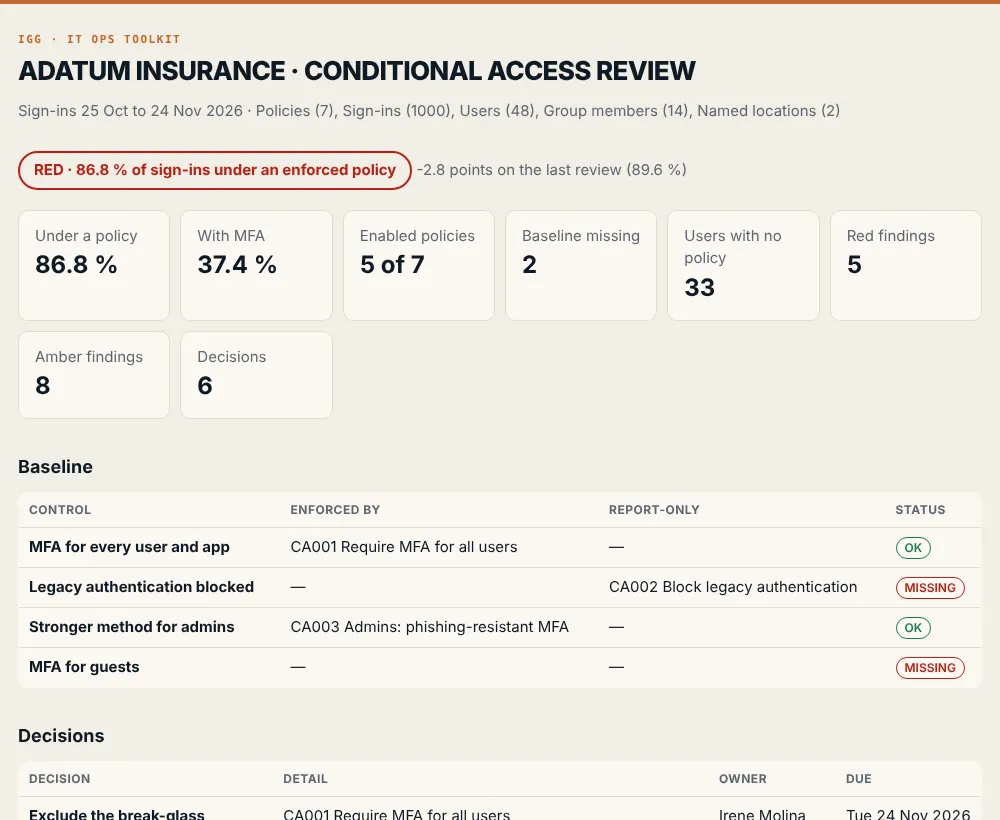

La oficina es una ubicación de confianza y la política de MFA la deja fuera. En algún momento la ubicación ganó un rango /10, y en los últimos 30 días 74 inicios de sesión correctos desde ella pasaron sin ninguna política aplicada. Es lo primero que señala la revisión de acceso condicional que acompaña a este post, un proyecto de código abierto que se ejecuta con datos de ejemplo de una aseguradora ficticia.
El acceso condicional se va desviando con cambios que, uno a uno, tienen sentido, y casi nunca se leen juntas las políticas y el registro de inicios de sesión. La revisión hace justo eso: toma las políticas, las ubicaciones con nombre, los usuarios, los grupos y un mes de inicios de sesión, todo exportado en solo lectura desde Microsoft Graph, y los lee lado a lado.
La base
Primero, cuatro controles que la organización espera tener activos: MFA para todos los usuarios y aplicaciones, autenticación heredada bloqueada, un método más fuerte para los administradores y MFA para los invitados. En la demo faltan dos. La política que bloquea la autenticación heredada está en modo informe desde agosto, y en el periodo habría parado 62 inicios de sesión de cuatro cuentas: un escáner que envía correo por SMTP AUTH, una sincronización del CRM que lee un buzón por IMAP y dos móviles que siguen con Exchange ActiveSync. Los invitados están excluidos de la política de MFA, y la política que se escribió para ellos está desactivada.
Exclusiones y break-glass
El grupo excluido de MFA empezó con dos cuentas de servicio y hoy tiene 14 miembros; siete están deshabilitados o llevan tres meses sin iniciar sesión. Una de las dos cuentas break-glass se quedó dentro de la política de MFA, así que el día que falle el MFA también puede quedarse bloqueada, y se usó un sábado por la tarde. Un administrador del service desk está en el grupo de exclusión y entra al portal de Azure solo con contraseña.
Lo que dice el registro de inicios de sesión
121 inicios de sesión correctos de 33 usuarios no pasaron por ninguna política aplicada: 74 desde la ubicación de confianza, 32 de invitados y 15 de cuentas excluidas. La cobertura se calcula por aplicación, así que los huecos se ven donde están: los portales de gastos y de RR. HH., que la política de dispositivo conforme no cubre.
La demo saca un 86,8% de inicios de sesión bajo una política aplicada, 2,8 puntos menos que en la revisión anterior, con un 37,4% usando MFA, cinco hallazgos rojos y ocho ámbar y seis decisiones: arreglar hoy la exclusión de la break-glass, mover los clientes heredados y activar el bloqueo, limpiar las exclusiones y la ubicación de confianza, decidir sobre tres políticas que hoy no hacen nada, meter a todos los administradores en la política del método fuerte y cubrir a los invitados.
Cómo usarlo con datos reales
Un script de PowerShell de solo lectura exporta las políticas con nombres en lugar de identificadores, las ubicaciones con nombre, los inicios de sesión del periodo con el resultado de cada política, los usuarios con sus roles y los miembros de los grupos que usan las políticas. La base, los límites y los responsables son la política de la propia organización en un fichero de configuración. Funciona con Python y sin dependencias externas, y genera un informe web, un dosier de una página para la revisión de identidad y seguridad y ficheros CSV con cada política, exclusión, usuario, aplicación, hallazgo y acción. Los datos de la demo son ficticios: nombres, direcciones, aplicaciones y cifras.
De dónde sale
La herramienta nace de llevar Microsoft 365 y Entra ID en el día a día: configurar y gestionar el acceso condicional, administración global con PIM y acceso just-in-time, integración de aplicaciones con SAML y SSO, Exchange Online, cumplimiento de dispositivos con Intune y Microsoft Graph con PowerShell.
¿Quieres llevarlo a tu entorno o adaptarlo a tu caso? Escríbeme y lo vemos.
Tech Career Lab · newsletter
¿Te ha servido? Cada dos semanas envío una idea práctica para perfiles IT: LinkedIn, proyectos, networking y procesos de selección.
Apúntate y llévate las 33 ideas →